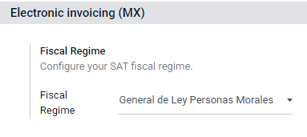
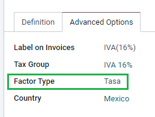
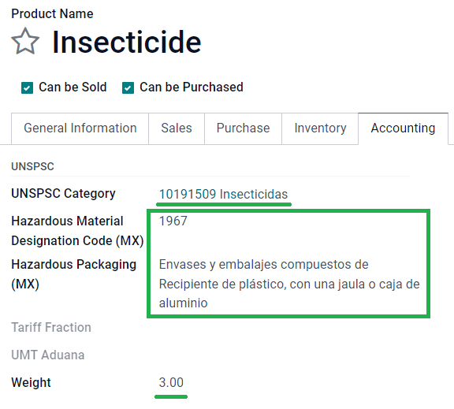
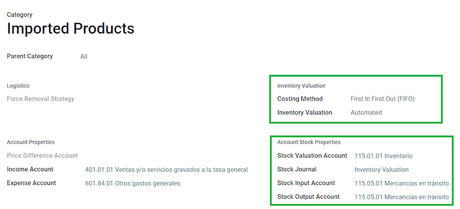
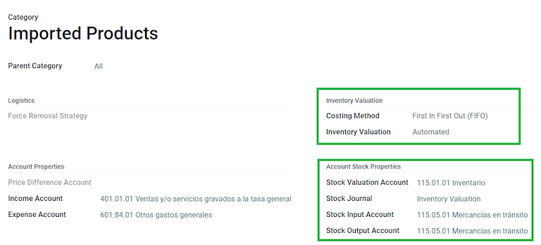

メキシコ¶
ウェビナー¶
メキシコローカライズに関する動画もご用意しています。この動画では、設定のセットアップ方法、一般的なワークフローの完了方法など、このローカライゼーションをゼロから実装する方法を紹介し、いくつかの具体的なユースケースについても詳しく説明しています。
入門¶
Odooメキシコローカリゼーションモジュールにより、2022年1月1日より法的要件となった`CFDIのバージョン4.0 <http://omawww.sat.gob.mx/ tramitesyservicios/Paginas/documentos/Anexo_20_Guia_de_llenado_CFDI.pdf>`_の SAT の仕様に従って、電子顧客請求書への署名を可能になります。また、これらのモジュールには、関連する会計レポート(DIOT、外国貿易の有効化、配送ガイドの作成など)が追加されます。
注釈
Odooでドキュメントに電子署名するには、*Sign*アプリケーションがインストールされていることを確認して下さい。
設定¶
必要事項¶
Odooでメキシコローカライズモジュールを設定する前に、以下の要件を満たす必要があります:
|SAT|に登録され、有効な|RFC|を持っていること。
Have a Certificate of Digital Seal (CSD).
PAC (Proveedor Autorizado de Certificación / Authorized Certification Provider)を選択してください。現在、Odooは以下のPACと連携しています： Solución Factible <https://solucionfactible.com/>`_, Quadrum (formerly Finkok) <https://cfdiquadrum.com.mx/>`_ and SW Sapien - Smarter Web.
Odooの仕入先請求書、販売、会計に関する知識と経験があること。このドキュメントには、Odooを使用するために必要な情報のみが記載されています。
モジュールをインストール¶
以下のモジュールを インストール と 連絡先 モジュールのインストールが必要です:
名称 |
技術名 |
説明 |
|---|---|---|
メキシコ - 会計 |
|
デフォルトの 会計ローカライゼーションパッケージ は、メキシコローカライズのための会計の特徴を追加します。例えば、最も一般的な税と勘定科目表 – SATの勘定科目グループコード に基づいています。 |
メキシコ用EDI |
|
電子ドキュメント — |SAT|が発行した技術ドキュメントに基づく - を生成および検証するための技術的および機能的要件が全て含まれています。これにより、顧客請求書(追記あり・なし)と支払補完書を政府に送付することができます。 |
メキシコ用EDI v4.0 for Mexico |
|
CFDI 4.0の正しい仕様でXMLドキュメントを作成するために必要です。 |
Odooメキシコローカライゼーションレポート |
|
メキシコの電子会計にレポートを適応: 勘定科目表、残高試算表、および|DIOT|。 |
メキシコ - 決算用ローカリゼーションレポート |
|
決算仕訳を作成するために必要です。(*月13日の仕訳*とも言われる)。 |
OdooメキシコXML Polizasエキスポート |
|
強制監査用に仕訳のXMLファイルをエクスポートすることができます。 |
Odoo メキシコXML PolizasエクスポートEDIブリッジ |
|
モジュール `l10n_mx_xml_polizas`を補完します。 |
注釈
メキシコ`を国として選択してデータベースを0からインストールする場合、Odooは自動的に以下のモジュールをインストールします: :guilabel:`メキシコ - 会計、 メキシコ用EDI, メキシコ用EDI v4.0。
以下のモジュールは任意です。特定の要件を満たす場合に*のみ*インストールすることをお勧めします。それらがビジネスに必要であることを確認して下さい。
名称 |
技術名 |
説明 |
|---|---|---|
メキシコ用EDI (高度な機能) |
|
顧客請求書に対外貿易補完を追加します: 外国にプロダクトを販売する際の法的要件。 |
メキシコ用EDI v4.0 (COMEX) |
|
モジュール |
メキシコ - 電子配送ガイド |
|
*カルタ・ポルテ*を作成できます: 仕入先請求書を作成することで、A-B間で商品を送っていることを、署名入りの電子ドキュメントで政府に証明することができます。 |
メキシコCFDI 4.0用電子配送ガイド |
|
モジュール |
在庫/陸揚用Odooメキシコローカライゼーション |
|
電子ドキュメントで陸揚費に関連する通関番号を管理できます。 |
会社の設定¶
正しいモジュールをインストールしたら、次は会社が正しいデータで設定されているか確認します。そのためには、 に行き、会社名の下にある 情報更新 を選択します。
郵便番号`コード、 :guilabel:`州、 国、 |RFC|(VAT`番号)を含む、完全な :guilabel:`住所 を入力します。
CFDI4.0の要件によると、主要な会社連絡先名は、 |SAT|に登録されている会社名と一致している**必要があります**。

重要
法的な観点から、メキシコ企業は現地通貨(MXN)を使用しなければなりません。そのため、Odooには別の通貨を設定する機能はありません。他の通貨を管理したい場合は、MXNをデフォルト通貨とし、代わりに 価格表 を使用して下さい。
次に、:menuselection:`設定 --> 会計 --> 電子請求 (MX) --> 会計制度`に進み、ドロップダウンリストより貴社に適用される税制を選択し、 :guilabel:`保存`をクリックします。
ちなみに
メキシコのローカライズをテストしたい場合、会社はメキシコ国内の実際の住所(全てのフィールドを含む)で設定することができ、 VAT として EKU9003173C9 を、 会社名 として ESCUELA KEMPER URGATE を追加します。guilabel:会計制度 には General de Ley Personas Morales を使用します。
連絡先¶
顧客請求書を発行する連絡先を作成するには、 に進みます。次に、連絡先の名前、完全な 住所 以下を含む: 郵便番号、 州、 国、 RFC (VAT 番号) を入力します。
重要
自分の会社と同じように、連絡先は全て |SAT|に正しいビジネス名を登録する必要があります。これは MX EDI タブに追加する必要がある 会計制度 にも当てはまります。
税金¶
顧客請求書に正しく署名するためには、ファクタータイプとタックスオブジェクトの設定を追加する必要があります。
ファクタータイプ¶
*ファクタータイプ*フィールドは、デフォルトの税金にあらかじめ設定されています。新しい税を作成する場合、このフィールドを設定する必要があります。そのためには、 に進み、 高度なオプション タブの ファクタータイプ フィールドを全てのレコードで有効にし、 税タイプ を 販売 に設定します。
ちなみに
メキシコは2つのシナリオに対応するため、2種類の0％VATを管理しています:
0% VAT は ファクタータイプ を :guilabel:`Tasa`として設定します。
VAT免除 は ファクタータイプ を Exento として設定します。
税オブジェクト¶
CFDI4.0の要求事項の1つは、XMLファイルに操作の税金を分解する必要がある(または必要ない)ということです。XMLファイルに追加される値は3種類あります:
01: 課税対象外 - 顧客請求書に税が含まれていない場合、この値が自動的に加算されます。02: 課税対象 - これは税を含む顧客請求書のデフォルト設定です。03: この値は、特定の顧客に対してオンデマンドでトリガされ、値02を置き換えることができます。
To use the 03 value, navigate to , and activate the No Tax Breakdown checkbox.

重要
税内訳なし の値は、特定の会計制度や税に**のみ**適用されます。修正する前に、まず会計士に相談し、あなたのビジネスに必要かどうかを確認して下さい。
その他税設定¶
支払登録する際、Odooは*現金基準移行勘定科目*から 定義`タブで設定された口座に税を移動します。この移動には税基準勘定科目が使用されます: 税を再分類する際の仕訳帳では、(`Base Imponible de Impuestos en Base a Flujo de Efectivo) が使用されます。この勘定科目は削除しないで下さい。
もし で新しい税を作成した場合、正しい 税グリッド (IVA、ISR、IEPS) を追加する必要があります。Odooはこの3つの税グループ**のみ**をサポートしています。

プロダクト¶
プロダクトを設定するには、 に進み、設定するプロダクトを選択するか、 作成 して新規プロダクトを作成します。guilabel:会計 タブの UNSPSCプロダクトカテゴリ フィールドで、プロダクトを表すカテゴリを選択します。この処理は手動で行うことも、 一括インポート を使って行うこともできます。
注釈
検証エラーを防ぐため、全てのプロダクトに|SAT|コードを関連付ける必要があります。
電子請求¶
PAC認証情報¶
プライベートキー(CSD) を|SAT|で処理した後、Odooから顧客請求書を作成する前に、選択した:ref:`PAC<mx-requirements> `に直接登録する**必要があります**。
これらのプロバイダでアカウントを作成したら、 に進みます。MXのPAC`セクションで、あなたの|PAC|の名前と認証情報(:guilabel:`PACのユーザー名`と:guilabel:`PACのパスワード) を入力します。

ちなみに
認証情報はないが、電子顧客請求をテストしたい場合は、 MX PACテスト環境 チェックボックスを有効化し、|PAC|として Solucion Factible を選択します。テスト環境用のユーザ名やパスワードを追加する必要はありません。
.cer および .key 証明書¶
会社の電子証明書<https://www.gob.mx/tramites/ficha/certificado-de-sello-digital/SAT139>`_は MX証明書 セクションにアップロードする必要があります。そのためには、 に移動します。MX証明書`セクションで、:guilabel:`明細を追加`を選択すると、ウィンドウが開きます。:guilabel:`作成`をクリックし、 :guilabel:`証明書`（:file:.cer`ファイル）、 証明書キー`（:file:.key`ファイル）、 証明書パスワード`をアップロードします。最後に :guilabel:`保存して閉じる をクリックします。

ワークフロー¶
電子請求¶
Odooの顧客請求書発行プロセスは、 |SAT|の電子請求の付属書20 <http://omawww.sat.gob.mx/tramitesyservicios/Paginas/anexo_20.htm>`_ バージョン4.0に基づいています。
顧客請求書¶
Odooから請求書を発行するには、:doc:`標準請求書発行フロー<../accounting/customer_invoices>`を使用して顧客請求書を作成する必要があります。
ドキュメントがドラフトモードである間、変更を加えることができます(例えば、顧客が必要とするかもしれない正しい:guilabel:`支払方法`や:guilabel:`使用方法`を追加することができます)。
顧客請求書を 確定 すると、青いメッセージが表示されます: 顧客請求書は、以下の電子請求サービスにより非同期に処理されます: CFDI (4.0)。
今すぐ処理 ボタンを押すと、ドキュメントが政府に送信され、署名されます。政府から署名されたドキュメントが返送されると、ドキュメントに Fiscal Folio フィールドが表示され、チャターに XML ファイルが添付されます。
ちなみに
顧客請求書の SATステータス フィールドの 再試行 をクリックすると、SAT で XML ファイルが検証済かどうかを確認できます。
テスト環境であれば、常に 見つかりません というメッセージが表示されます。
署名した顧客請求書をメールで送信するには、Odooから直接 送信印刷 ボタンをクリックし、XMLファイルとPDFファイルを一緒に送信することができます。また、:guilabel:`印刷`ボタンをクリックし、希望の印刷オプションを選択することで、PDFファイルをコンピュータにダウンロードすることもできます。
クレジットノート¶
顧客請求書はドキュメントタイプ "I" (Ingreso)ですが、クレジットノートはドキュメントタイプ"E" (Egreso)です。
:doc:`クレジットノートの標準フロー<../accounting/customer_invoices/credit_notes>`に追加されたのは、|SAT|の要件として、クレジットノートとインボイスの間にFiscal Folioを介した関係がなければならないということだけです。
この要件のため、フィールド CFDI Origin はこの関係を 01| の後に元の顧客請求書のFiscal Folioを付けて追加します。

ちなみに
For the CFDI Origin field to be automatically added, use the Add Credit Note button from the invoice, instead of creating it manually.
支払の補完¶
支払ポリシー¶
One addition of the Mexican localization is the Payment Policy field. According to the SAT documentation, there are two types of payments:
PUE(Pago en una Sola Exhibición/1回の支払で支払)PPD(Pago en Parcialidades o Diferido/分割払または繰延)関連項目
The difference lies in the Due Date or Payment Terms of the invoice.
To configure PUE invoices, navigate to , and either select an invoice Due Date within the same month, or choose a payment term that does not imply changing the due month (immediate payment, 15 days, 21 days, all falling within the current month).

ちなみに
Some Payment Terms are already installed by default, and can be managed from .
PPD 請求書を設定するには、 に移動し、 期日 が翌月1日以降の請求書を選択します。これは 支払条件 の支払日が翌月である場合にも適用されます。

重要
Because the PPD policy implies that an invoice is not going to get paid at the moment, the correct Payment Way for the PPD invoices is 99 - Por Definir (To define).
支払フロー¶
どちらの場合でも、Odoo :doc:`の支払プロセスは同じ<../accounting/customer_invoices>`ですが、主な違いは PPD 請求書に関連する支払がドキュメントタイプ "P"(Pago)の作成をトリガすることです。
支払が PUE 請求書に関連している場合、ウィザードに登録し、対応する顧客請求書と関連付けることができます。そのためには、 に移動し、請求書を選択します。そして 支払登録 ボタンをクリックします。請求書のステータスは 支払中 に変わります。
関連項目
While this process is the same for PPD invoices, the addition of the creating an electronic document means some additional requirements are needed to correctly send the document to the SAT.
顧客請求書から、支払を受けた特定の 支払方法 を確認する必要があります。このため、 支払方法 フィールドには 99 - Por Definir (定義する)` を設定することはできません。
顧客の連絡先カードの 会計 タブに銀行口座番号を追加する場合、検証済の口座番号が必要です。
注釈
正確な設定は`SATの付属書20 <http://omawww.sat.gob.mx/tramitesyservicios/Paginas/anexo_20.htm>`_にあります。通常、 Bank Account は転送の場合は10桁か18桁、クレジットカードやデビットカードの場合は16桁にする必要があります。
支払が 支払ポリシー PPD で署名された顧客請求書と関連している場合、Odooは 今すぐ処理 をクリックすると、対応する支払補完情報を自動的に生成します。

警告
MXNでの支払いは、USDでの複数の顧客請求書への支払に使用することはできません。その代わり、支払は複数の支払いに分けて、対応する顧客請求書の 支払登録 ボタンを使用して下さい。
顧客請求書取消¶
It is possible to cancel the EDI documents sent to the SAT. According to the Reforma Fiscal 2022, since January 1st, 2022, there are two requirements for this:
With all cancellation requests, you must specify a cancellation reason.
After 24 hours from the invoice creation, the client must be asked to approve the cancellation. If there is no response within 72 hours, the cancellation is processed automatically.
Invoice cancellations can be made for one of the following reasons:
01 - Invoice issued with errors (with related document)
02 - Invoice issued with errors (no replacement)
03 - The operation was not carried out
04 - Nominative operation related to the global invoice
To initiate a cancellation, go to , select the posted invoice to cancel, and click Request Cancel. Then, refer to the Cancellation reason 01 - Invoice issued with errors (with related document) or Cancellation reasons 02, 03, and 04 sections, depending on the cancellation reason.
ちなみに
Alternatively, request a cancellation from the CFDI tab by clicking Cancel on the line item.
Cancellation reasons 02, 03, and 04¶
In the Request CFDI Cancellation pop-up window, select the desired cancellation Reason and Confirm the cancellation.
Upon doing so, the invoice cancellation is generated with a reason line item in the CFDI tab.
注釈
If the client rejects the cancellation, the invoice cancellation line item is removed from the CFDI tab.
支払取消¶
It is also possible to cancel Payment Complements. For this, go to the payment, via , and select Request EDI Cancellation. As with invoices, a blue button will appear. Click Process now, and the document will be sent to the SAT. After a few seconds, you can click Retry to confirm the current SAT status.
最後に、支払ステータスは 取消 に移行されます。
注釈
顧客請求書と同じように、新しい*支払補完*を作成する際に、:guilabel:``CFDI Origin`フィールドに`04|`と会計フォリオを追加して元のドキュメントの関連性を追加することができます。
請求特別な使用ケース¶
一般向けCFDI¶
商品またはサービスの販売先が顧客請求書を必要としない場合、*一般向けCFDI*を作成する必要があります。
顧客`の名前に `PUBLICO EN GENERAL を使用すると、エラーがトリガされます。これはCFDI 4.0の主な変更点であり、その特定の名前の顧客請求書には追加フィールドが必要ですが、Odooでは現在サポートしていません。そのため、*一般向けCFDI*を作成するには、**PUBLICO EN GENERAL`ではない**任意の名前を顧客に追加する必要があります。(例: CLIENTE FINAL)。
これに加えて、会社の ZIP コードを追加し、一般的な RFC を XAXX010101000 と設定し、顧客の 会計制度 を`Sin obligaciones fiscales`と設定する必要があります。

複数通貨¶
メキシコの主要通貨はMXNです。これは全てのメキシコ企業にとって必須ですが、異なる通貨で顧客請求書(および支払い)を送受信することも可能です。複数通貨 の使用を有効にするには、 に移動し、 自動通貨レート セクションの サービス として メキシコ銀行 を設定します。次に、 :guilabel:`間隔`フィールドに為替レートを更新したい頻度を設定します。
こうすることで、ドキュメントのXMLファイルには、正しい為替レートと、外国通貨とMXNの両方での合計金額が記載されます。
:doc:`各通貨の銀行口座<../accounting/bank/foreign_currency>`を使用することを強くお勧めします。
注釈
為替レートが毎日自動的に更新される通貨は、USD、EUR、GBP、JPYのみです。
前受金¶
顧客から前払金を受け取り、それを後で顧客請求書に適用する必要がある場合があります。Odooでこれを行うには、顧客請求書同士を:guilabel:CFDI Origin`フィールドで適切にリンクする必要があります。そのためには、 :doc:`販売 <../../sales> アプリがインストールされている必要があります。
はじめに アプリに行き、プロダクト Anticipo を作成し、設定します。プロダクトタイプ は サービス`である必要があり、 :guilabel:`UNSPSCカテゴリ の使用は `84111506 Servicios de facturación`である必要があります。
それから :menuselection:`販売 --> 管理設定 --> 請求 -->前受金`に行き、Anticipo プロダクトをデフォルトとして追加します。
合計金額で販売オーダを作成し、前受金(パーセンテージまたは固定金額)を作成します。その後、ドキュメントに署名し、 :guilabel:`支払を登録`します。
顧客が最終的な請求書を受け取る時が来たら、同じ販売オーダから再度請求書を作成します。:guilabel:`顧客請求書を作成`ウィザードで、:guilabel:`通常請求書`を選択し、:guilabel:`前受金を差引く`のチェックを外します。
次に、最初の顧客請求書から Fiscal Folio をコピーし、2番目の顧客請求書の CDFI Origin に貼り付け、値の前にプレフィクス 07| を付けます。その後、ドキュメントに署名して下さい。
この後、最初の請求書のクレジットノートを作成します。2つ目の顧客請求書の Fiscal Folio をコピーし、それをクレジットノートの CFDI Origin に貼り付け、プレフィクス 07| を付けます。その後、ドキュメントに署名して下さい。
これにより、全ての電子ドキュメントが互いにリンクされます。最後のステップは、新しい顧客請求書を完全に支払うことです。新しい顧客請求書の下部にある 未払クレジット にクレジットノートがあるので、それを支払に追加します。最後に 支払登録 ウィザードで残額を登録します。
対外貿易¶
対外貿易は、通常の請求書を補完するもので、 `SAT規定 <http://omawww.sat.gob.mx/tramitesyservicios/Paginas/complemento_comercio_exterior.htm>`_に従って、外国顧客との請求書にXMLとPDFの両方で特定の値を追加し、例えば:
受信者と送信者の特定のアドレス
プロダクトの種類を識別する Tariff Fraction の追加。
正確な :guilabel:`インコタームズ`(国際商業用語)、その他(原産地証明、特別単位)。
これにより、輸出業者と輸入業者を正しく特定することができ、さらに販売された商品の説明も拡大されます。
2018年1月1日以降、対外貿易は、A1タイプの輸出オペレーションを行う納税者の要件となっています。現在のCFDIは4.0ですが、対外貿易は現在バージョン1.1です。
この機能を使用するには、モジュール l10n_mx_edi_extended and l10n_mx_edi_extended_40 がインストールされている必要があります。
重要
インストールする前に、あなたのビジネスがこの機能を使用する必要があることを確認してください。必要であれば、モジュールをインストールする前に、まず会計士に相談して下さい。
設定¶
連絡先¶
会社の連絡先を対外貿易に設定するには、 に移動し、会社 を選択します。CFDI4.0の要件では、連絡先に有効な ZIP コードを追加するように求められていますが、外部貿易の補完では、 都市 と 都道府県/州 も検証済でなければならないという要件が追加されます。この3つのフィールドは全て`公式SATカタログ<sat-catalog> `_と一致していなければなりません。
警告
Add the City and State in the company's contact, not in the company itself. You can find your company's contact in .
:guilabel:`所在地`フィールドと :guilabel:`コロニーコード`フィールドはオプションで、 :menuselection:`管理設定 --> 一般設定 --> 会社`で直接追加することができます。この2つのフィールドは|SAT|のデータと一致していなければなりません。

外国の受取顧客の連絡先データを設定するには、:menuselection:`会計 --> 顧客 --> 顧客`に移動し、外国の顧客の連絡先を選択します。エラーを避けるため、連絡先には以下のフィールドが必要です:
会社全体の 住所、有効な 郵便番号 コードと外国の 国。
外国の VAT (税識別番号、例:コロンビア
123456789-1)のフォーマット。MX EDI`タブでは、顧客が商品を受け取る期間が一時的(:guilabel:`一時的)か永続的(確定的)かを指定する必要があります。
重要
新しい連絡先がメキシコの既存の連絡先を複製して作成された場合は、 会計制度`フィールドから引継がれた情報を必ず削除して下さい。また、 :guilabel:`税内訳なし オプションを有効にしないで下さい。このオプションを選択すると、対外貿易連絡先の設定に必要な必須フィールドが非表示になります。

注釈
結果の XMLファイルとPDFファイルでは、VAT は自動的に海外取引の一般的な VAT: `XEXX010101000`に置き換えられます。
プロダクト¶
対外貿易に関わる全てのプロダクトには4つの必須項目があり、そのうち2つは対外貿易専用です。
プロダクトの 内部参照 は 一般情報 タブにあります。
プロダクトの 重量 は
0以上でなければなりません。The correct Tariff Fraction of the product in the Accounting tab.
The UMT Aduana corresponds to the Tariff Fraction.
ちなみに
関税率 の単位コードが
01の場合、正確な UMT Aduana は `kg`です。関税率 の単位コードが
06の場合、正しい UMT Aduana は単位です。
請求フロー¶
請求書を作成する前に、対外貿易請求書ではプロダクトの金額を米ドルに変換する必要があることを考慮することが重要です。そのため、 複数通貨 の有効化する**必要があり**、 通貨 セクションで USD*を有効化する**必要があります。実行する正しい サービス は メキシコ銀行 です。
そして で正しい為替レートを設定すると、 インコタームズ と その他情報 タブにあるオプションの 証明書ソース フィールドだけが残ります。

最後に、通常の請求書と同じプロセスで請求書に署名し、:guilabel:`今すぐ処理`ボタンをクリックして下さい。
配送ガイド¶
A Carta Porte is a bill of lading: a document that states the type, quantity, and destination of goods being carried.
2021年12月1日、このCFDIのバージョン2.0が全ての運送業者、仲介業者、商品の所有者向けに導入されました。Odooはドキュメントタイプ "T"(Traslado)を作成することができ、これは他のドキュメントとは異なり、顧客請求書や支払の代わりに配送オーダで作成されます。
Odooは地上輸送を伴う(または伴わない)XMLファイルとPDFファイルを作成し、*危険物*として扱われる材料を処理することができます。
この機能を使用するには、モジュール l10n_mx_edi_extended, l10n_mx_edi_extended_40, l10n_mx_edi_stock および l10n_mx_edi_stock_40 がインストールされている必要があります。
これに加え、 在庫 and Sales アプリもインストールされている必要があります。
重要
OdooはCarta Porteタイプのドキュメントタイプ "I"(Ingreso)、航空輸送、海上輸送をサポートしていません。この機能が必要な場合は、修正の前にまず会計士にご相談下さい。
設定¶
Odooは2つの異なるタイプのCFDIを管理します:
連邦高速道路なし: 送付先までの距離 が `30,000KMまで <http://omawww.sat.gob.mx/cartaporte/Paginas/documentos/PreguntasFrecuentes_Autotransporte.pdf>`_の場合に使用されます。
連邦運送: 送付先までの距離 が、30,000KMを超える場合に使用されます。
通常の顧客請求書の標準要件(顧客の|RFC|、UNSPSCコードなど)以外は、*連邦高速道路なし*を使用している場合、外部設定は必要ありません。
*連邦運送*では、連絡先、車両設定、プロダクトにいくつかの設定を追加する必要があります。これらの設定はXMLファイルとPDFファイルに追加されます。
連絡先と車両¶
対外貿易機能のように、会社および最終顧客の両方で 住所 が記入されている必要があります。 郵便番号 コード、 都市 および 都道府県/州 は Carta Porte用公式SATカタログ <sat-catalog_>_ と一致している必要があります。
ちなみに
フィールド 所在地 は両方の住所で任意です。

重要
配送ガイドに使用される配送元住所は で設定します。デフォルトでは会社の住所として設定されていますが、正しい倉庫の住所に変更することができます。
この機能に加え、 に 車両設定 メニューが追加されました。このメニューでは配送オーダに使用する車両に関する情報を全て追加することができます。
正しい配送ガイドを作成するために、全てのフィールドは必須です。
仲介者 セクションでは、車両の運転者を追加する必要があります。この連絡先の必須項目は VAT と 作業者ライセンス だけです。

プロダクト¶
通常の顧客請求書と同様に、全てのプロダクトには UNSPSCカテゴリ が必要です。これに加えて、配送ガイドに関わるプロダクトには2つの追加設定があります:
在庫移動を作成するには、 プロダクトタイプ を 在庫可能品 に設定する必要があります。
在庫 タブの 重量 フィールドは
0以上でなければなりません。
警告
値 0 を持つプロダクトの配送ガイドを作成すると、エラーがトリガされます。配送オーダには 重量 が既に格納されているため、プロダクトを返却し、正しい金額で配送オーダ(および配送ガイド)を再度作成する必要があります。

販売と在庫フロー¶
配送ガイドを作成するには、まず から販売オーダを作成し、確認する必要があります。これにより 配送 スマートボタンが生成されます。それをクリックし、転送を 検証 します。
ステータスが 完了`に設定された後、運送を編集し、 :guilabel:`運送タイプ`(:guilabel:`連邦高速道路なし`または :guilabel:`連邦輸送)を選択することができます。
配送ガイドのタイプが :guilabel:連邦高速道路なし` の場合、運送を保存してから 配送ガイドを生成 をクリックします。出来上がったXMLはチャターで見ることができます。
配送ガイドのタイプが 連邦運送 の場合、タブ MX EDI が表示されます。そこで 送付先までの距離(KM) に 0 より大きな値を入力し、この配送に使用する 車両設定 を選択します。

危険ハザード¶
UNSPSCカテゴリ`に含まれる特定の値は、SATの公式カタログ<http://omawww.sat.gob.mx/tramitesyservicios/Paginas/complemento_carta_porte.htm>`_では*危険ハザード*とみなされています。これらのカテゴリは :guilabel:`連邦運送 で配送ガイドを作成する際に追加の考慮が必要です。
まず、 からプロダクトを選択します。次に 会計 タブの 危険物指定コード (MX) と 危険梱包 (MX) フィールドに SAT カタログの正しいコードを入力します。
In , the data from the Environment Insurer and Environment Insurance Policy has to be filed, as well. After this, continue with the regular process to create a delivery guide.

税関番号¶
*税関申告書*(Pedimento Aduanero)は、商品の輸出入を含め、会計主体(SAT)への拠出金が全て支払われたことを証明する会計ドキュメントです。
According to the Annex 20 of CFDI 4.0, in documents where the invoiced goods come from a first-hand import operation, the field, Customs Number, needs to be added to all lines of products involved with the operation.
そのためには、 在庫, Purchase, 販売 アプリに加えて、 l10n_mx_edi_landing モジュールをインストールする必要があります。
重要
対外貿易と混同しないで下さい。税関番号は商品の輸入に直接関係し、対外貿易補数は輸出に関係します。この機能が必要な場合は、修正する前にまず会計士に相談して下さい。
設定¶
In order to track the correct customs number for a specific invoice, Odoo uses landed costs. Go to . Make sure that Landed Costs is activated.
まずは、Pedimento`といわれる *サービス*-タイププロダクトを作成して下さい。 :guilabel:`購買 タブで、 :guilabel:`陸揚コスト`を有効化し、 :guilabel:`デフォルト分割方法`を選択します。
次に税関番号を保持する*在庫可能品*を設定します。そのためには、在庫可能品を作成し、:guilabel:`プロダクトカテゴリ`に以下の設定があることを確認します。
原価計算法: 先入先出 または 移動平均原価
在庫評価: 自動化済
在庫評価勘定: 115.01.01 Inventario
在庫仕訳帳: 在庫評価
在庫入力勘定: 115.05.01 Mercancías en tránsito
在庫出力勘定: 115.05.01 Mercancías en tránsito
 

購買と販売フロー¶
プロダクトを設定後、標準 :doc:`購買フロー <../../inventory_and_mrp/purchase>`に従って下さい。
Create a purchase order from . Then, confirm the order to display a Receipt smart button. Click on the Receipt smart button to Validate the receipt.
Go to , and create a new record. Add the
transfer that you just created, and both: the product Pedimento and Customs number.
オプションとしてコスト金額を追加できます。その後、陸揚コストを検証します。一度 :guilabel:`記帳済`になると、この入荷に関連した全プロダクトに税関番号が割当られます。
警告
You can only add the Pedimentos number once, so be careful when associating the correct number with the transfer(s).

そして販売オーダを作成し、確認します。これにより、 配送 スマートボタンがトリガされるので、検証して下さい。
最後に、販売オーダから顧客請求書を作成し、確認します。プロダクトに関連する顧客請求書の明細には税関番号が記載されています。この番号は、先に作成した*陸揚コスト*レコードに追加された税関番号と一致する必要があります。

電子会計¶
メキシコでは、 電子会計処理 は会計記録を|SAT|のウェブサイトを通じて、電子的な方法で会計記録と入力を行い、毎月会計情報を入力する義務を指します。
それは3つのXMLファイルからなります:
現在使用中の勘定科目表の更新済リスト。
月次試算表と決算報告書: 試算表13か月目。
任意または強制監査では、総勘定元帳の仕訳帳をエクスポートします。
The resulting XMLファイルの結果は `Anexo Técnico de Contabilidad Electrónica 1.3 <https://www.gob.mx/cms/uploads/attachment/file/151135/Anexo24_05012015.pdf>`_の要件に従います。
これに加えて DIOT: .txt fileにエキスポートできるIVA税を含む仕入先仕訳のレポートを生成することができます。
これらのレポートを使用するには、 l10n_mx_reports, l10n_mx_reports_closing, l10n_mx_xml_polizas と l10n_mx_xml_polizas_edi および、 :doc:`会計 <../accounting/get_started>`モジュールがインストールされている必要があります。
重要
送付する報告書の具体的な特徴や義務は、会計制度によって変わる可能性があります。政府にドキュメントを送付する前に、必ず会計士に連絡して下さい。
勘定科目表¶
メキシコの 勘定科目表 は、 follows a SAT's' `Código agrupador de cuentas <http://omawww.sat.gob.mx/fichas_tematicas/buzon_tributario/Documents/codigo_agrupador.pdf>`_に基づいた特定のパターンに準じています。
|SAT|のエンコーディンググループに従っている限り、どんな勘定科目も作成できます: パターンは NNN.YY.ZZ または `NNN.YY.ZZZ`です。
Example
例えば、 102.01.99 または `401.01.001`など。
新しい勘定科目が|SAT|エンコーディンググループパターンで、 :menuselection:`会計 --> 設定 --> 勘定科目`内で作成された場合、正しいグループ化コードが :guilabel:`タグ`に表示され、勘定科目が*COA*レポートに表示されます。
全ての勘定科目を作成したら、正しい タグ が追加されていることを確認して下さい。
注釈
セクションが0で終わるパターンは使うことができません(例えば 100.01.01, 301.00.003 や`604.77.00`)。これはレポートのエラーをトリガします。
Once everything is set up, go to , click the (down arrow) next to the PDF button, and select COA SAT (XML). This generates an XML file with your accounts, which you can upload directly to the SAT website.
試算表¶
試算表は、正しい エンコーディンググループ を追加していれば、勘定科目の初期残高、貸方残高、合計残高を報告します。
To generate this report in an XML format, go to . Select the month you want to download in the calendar, then click the (down arrow) next to the PDF button, and select SAT (XML).

注釈
Odoは *Balanza de Comprobación Complementaria*を生成しません。
Month 13 trial balance¶
The Month 13 report is a closing balance sheet that shows any adjustments or movements made in the accounting to close the year.
To generate it, proceed as follows:
Go to and create a new entry for all the amounts to be changed, balancing the debit and/or credit of each one.
In the Other Info tab, enable the Month 13 Closing option.
Go to , click the calendar, and select Month 13.
Click the (down arrow) next to the PDF button, and select SAT (XML).

総勘定元帳¶
法律により、メキシコでの取引は全てデジタルで記録しなければなりません。Odooは顧客請求書や支払の仕訳を全て自動で作成するため、仕訳をエクスポートしてSATの監査や税還付に対応することができます。
ちなみに
現在のニーズに応じて、期間や仕訳帳でフィルタリングすることができます。
To create the XML, go to , click the (down arrow) next to the PDF button, and select XML (Polizas). In the XML Polizas Export Options window, choose between four different Export types:
税務調査
調査認証
返品
報酬
For Tax audit or Audit certification, you need to write the Order Number provided by the SAT. For Return of goods, or Compensation, you need to write your Process Number, also provided by the SAT.
注釈
送信せずにこのレポートを表示したい場合は、 ABC6987654/99`を :guilabel:`オーダ番号 そして AB123451234512 を :guilabel:`処理番号`に使用して下さい。
DIOTレポート¶
DIOT (Declaración Informativa de Operaciones con Terceros / 第3者との業務に関する情報開示宣言) は、仕入先請求書から控除可能な支払、控除不可能な支払、源泉徴収、VAT還付の現在の状況を |SAT|に提供する、 |SAT|との追加義務です。
他のレポートとは異なり、DIOT はA-29フォームを含む |SAT|が提供するソフトウェアにアップロードされます。Odooでは、取引記録を:file:`.txt`ファイルとしてダウンロードし、フォームにアップロードすることができます。
この取引ファイルには、仕入先請求書に登録された支払総額が、対応するIVAの種類に分けて記録されています。guilabel:`VAT`と:guilabel:`国`は全ての仕入先に対して必須です。
To generate the DIOT report, go to .
Select the month you want to download in the calendar, then click the
(down arrow) next to the PDF button to select Report: DIOT (MX)
and download the .txt file.

重要
You need to fill the L10N Mx Type of Operation field in the Accounting tab of each one of your vendors to prevent validation errors. Make sure that your foreign customers have their country set up for L10N Mx Nationality to appear automatically.